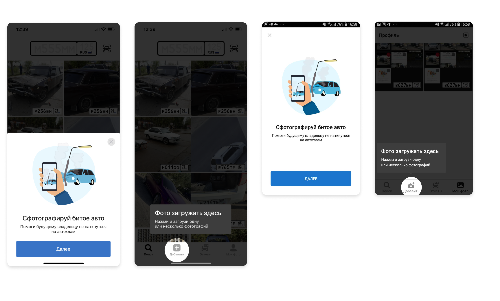
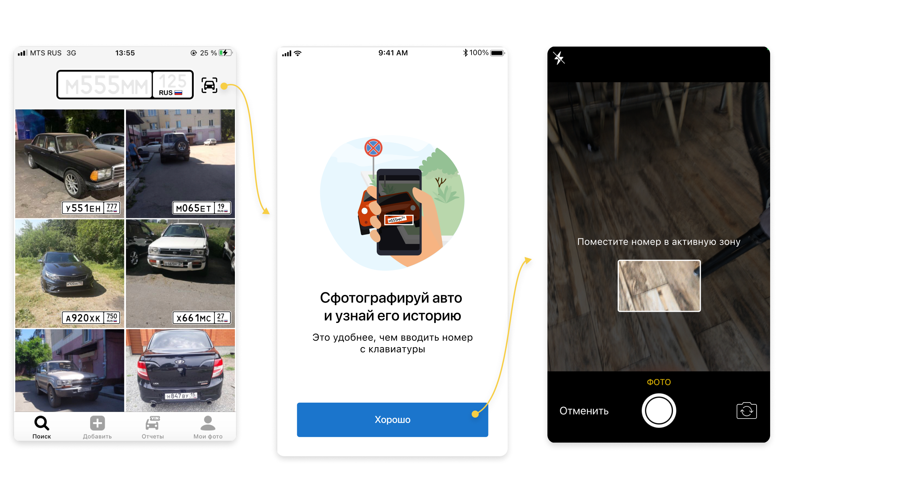
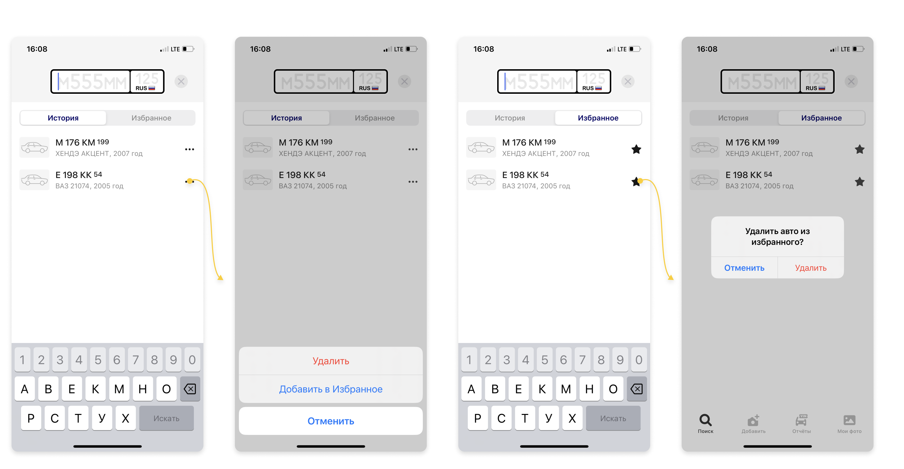

Nomerogram shows a car’s sale history and photos by its license plate.
The history comes from old sale ads, social networks and open databases, and from drivers themselves: photograph a car behaving badly on the road, and the shot joins that plate’s public record.
App Store Google PlayMy Role and Responsibilities
The team: a product manager, an analyst, two iOS and two Android engineers, and a QA engineer, with backend owned by a separate team.
- Owned UX for the iOS and Android apps: search, history, and the photo contribution flows.
- Turned analytics findings into features: history clutter among heavy users became the case for Favorites.
- Ran in-depth interviews and hallway tests to pick between prototyped concepts before development.
- Worked with the product manager and analyst to prioritize the roadmap by impact.
- Prototyped key flows in Figma, including edge cases for camera-based plate recognition.
Onboarding to Boost Photo Uploads
Problem
Uploading photos sat outside the app’s core flow: only 12.7% of users ever reached the upload screen, and just 1.5% of those who searched for cars uploaded a photo.
Discoverability wasn’t the whole problem — users saw no reason to contribute.
Solution
Instead of telling users what they could do (“Upload photos”), the onboarding told them why it mattered. The screen says it plainly: “Photograph a damaged car — help the future owner avoid junk.”
One lightweight screen, shown on the user’s fifth or sixth visit, once the app had proven its value. Like every change we shipped, it went through an A/B test.
Outcome
- Visits to the upload screen grew by 27%
- Uploaded photos nearly doubled

License Plate Recognition from Photo
Problem
The only way to check a car was to type the plate by hand. In the most common real-world scenario, standing next to a car on the street, that meant photographing the plate and then switching screens to retype the number.
Extra effort landed at exactly the moment users were most motivated.
Solution
I designed a camera-first check: point the camera at a plate inside the on-screen frame, the app recognizes the number and starts the check. No typing, no screen switching.
Recognition didn’t have to be perfect. In production the engine read 97% of plates correctly, and I designed the flow around the remaining 3%: the app pre-filled every character it did read into the plate input, and the user corrected the rest instead of starting over.
Outcome
- Checking a car became a one-step action in street scenarios
- Manual plate entry no longer blocked the core flow
- A misread plate cost the user a one-character fix, not a retyped number

Search History
Problem
Active users checked up to 30 license plates in a single session, but history kept only the 20 most recent searches.
Cars they wanted to come back to silently disappeared, and they had to search for them all over again.
Solution
Analytics and interviews pointed to the same need: a way to save a car deliberately, separate from the automatic history.
I prototyped several concepts and tested them in hallway sessions and in-depth interviews. Favorites won: save a car, return to it any time.
Outcome
- In the A/B test, 15% of users adopted Favorites within a month
- No complaints in reviews or support after release
- History stayed manageable even for those checking dozens of plates a session
